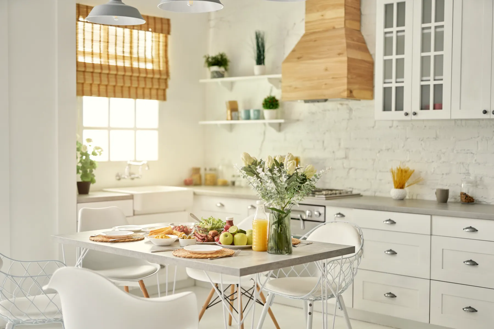
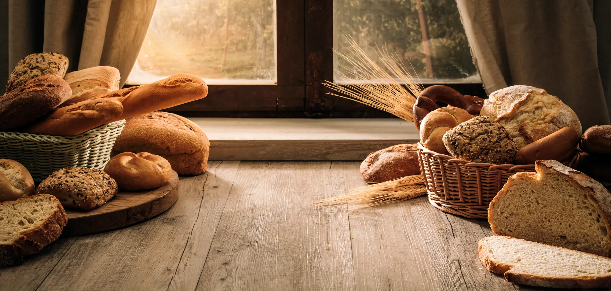
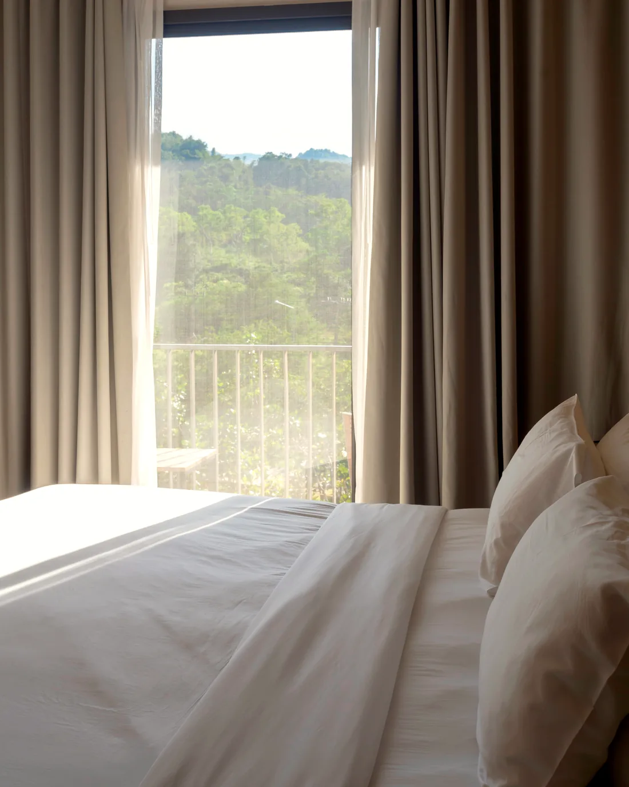

The kitchen
What the coast gives,
the table gets.
There is no menu card and no room service. There is a kitchen that starts before the sun, a garden with opinions, and a fishmonger who knows the lane. Guests eat what the day turned out to be — and the day is usually generous.

The shape of a day
Times drift with the season — the conditions line at the top of every page keeps the honest ones.
- Before first light
- The ovens go on. Bread, and something sweet.
- From seven
- Coffee on the sideboard, door on the latch.
- Eight to eleven
- Breakfast, unhurried. Eggs from the lane, fish when the boats say so.
- Midday
- A standing soup, bread from the morning, help yourself.
- Four
- Cake at the big table, walkers welcome back.
- Half seven
- The long table. One sitting, one menu, most nights.

Before first light
The bread is the alarm clock.
Supper
The long table
Supper is one table and one sitting, half past seven, most nights of the week. Four courses of whatever the coast and the kitchen garden agreed on that morning, and a cellar that leans coastal and white.
The table seats guests first; the remaining chairs go to the lane. Tell the kitchen in the morning if you are in for the evening — that is the entire reservation system.
- Sitting
- 19:30, one sitting
- Courses
- Four, no choices, all appetites
- Guests
- $85 a head, cellar apart
- Sundays
- The kitchen rests. Cold supper laid instead.
